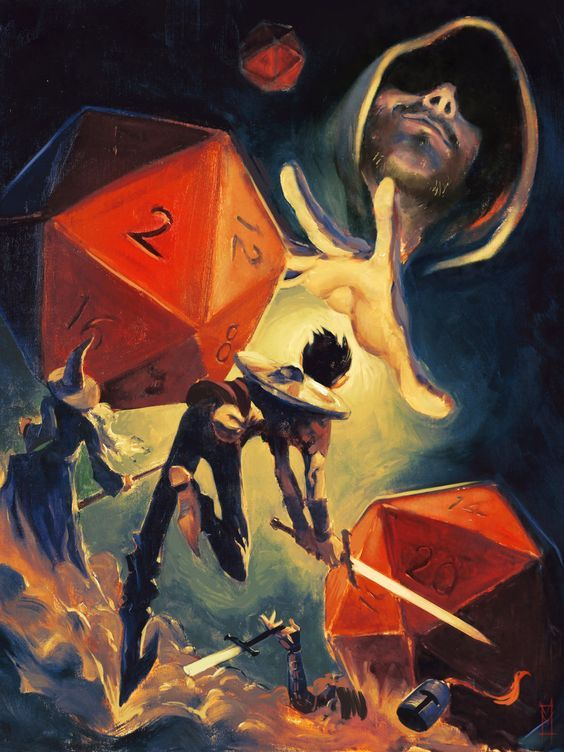

Os RPGs de Mesa, constituem uma forma única e envolvente de entretenimento colaborativo. Nesses jogos, os participantes mergulham em mundos imaginários, assumindo o papel de personagens criados por eles mesmos ou pelo mestre do jogo. A dinâmica central envolve narrativa, onde o mestre descreve situações e os jogadores respondem com ações, moldando coletivamente o desenrolar da história. A resolução de desafios e a evolução dos personagens são frequentemente determinadas por rolagens de dados, acrescentando um elemento de imprevisibilidade e estratégia.

Os RPGs de Mesa não são apenas uma forma de diversão, mas também uma experiência social intensa. Eles fomentam a criatividade, a resolução de problemas e o trabalho em equipe, enquanto proporcionam uma oportunidade única para os participantes explorarem sua imaginação de maneiras profundas e imersivas. Seja enfrentando dragões em um reino de fantasia ou desvendando mistérios em um cenário de detetive, o RPG de Mesa oferece um espaço de escape onde a magia da imaginação se entrelaça com a camaradagem dos jogadores, tornando-se uma jornada única e memorável.
Além disso, os RPGs de Mesa servem como uma plataforma flexível para a expressão individual, permitindo que os participantes desenvolvam narrativas complexas e explorem diferentes aspectos da condição humana. Cada sessão é uma oportunidade para os jogadores aprimorarem habilidades de improvisação, pensamento estratégico e empatia, pois vivenciam as consequências de suas escolhas dentro do contexto do jogo. A interação entre as personas fictícias e as tramas criadas proporciona não apenas entretenimento, mas também um terreno fértil para o desenvolvimento pessoal, criando memórias compartilhadas e laços duradouros entre os participantes.
